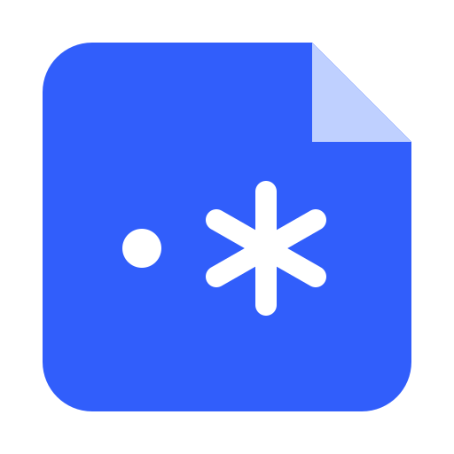
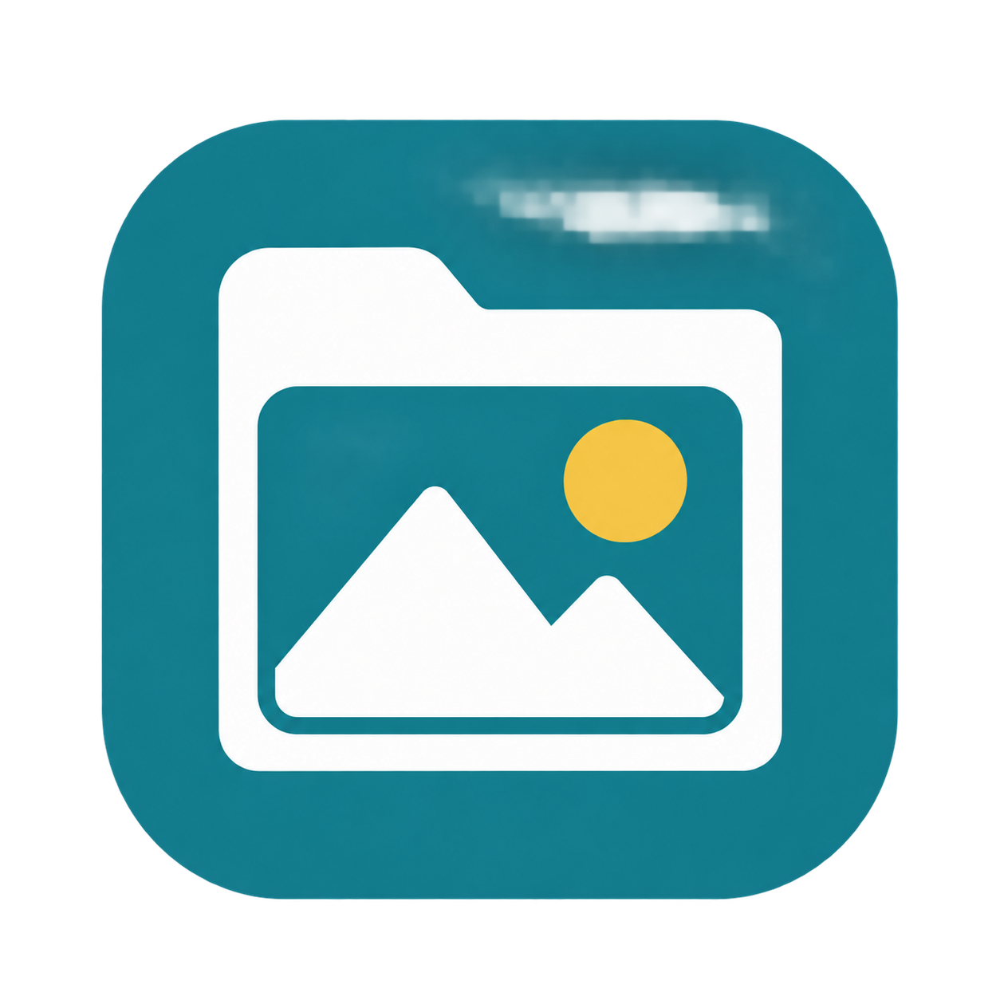

Earlier writingMee’s Notes ↗
Notes on programming, editing, and ideas collected along the way.
The latest article will refresh when connected.
EDITOR · WRITER · MAKER
A senior book editor at Flag Technology,
curious about technology and its possibilities.
Exploring technology through editing, writing, and tools that solve everyday problems.
Find me on GitHub01 / WRITING
Notes from a curious mind. Articles are in Chinese.
Notes on programming, editing, and ideas collected along the way.
The latest article will refresh when connected.
Exploring new technologies and sharing discoveries from hands-on work.
The latest article will refresh when connected.
02 / SMALL TOOLS
Small tools, made for everyday work.
See each tool’s supported platforms below. macOS downloads are for Apple Silicon (M-series) Macs.
Capture, annotate, and edit screenshots in multiple tabs. For high-resolution images, choose the optional virtual 4K display capture mode: move a window to a virtual display, let it redraw, and capture it for tutorials and publishing.The level of detail in virtual mode depends on the target application’s DPI support.

Search with regular expressions, reorganize and split PDFs, and extract text with OCR. Extract embedded images at their original pixel dimensions and transparency, while preserving page quality when reorganizing or splitting files.

Batch-search PDF and Word documents with regular expressions, including matches across lines and pages and joined hyphenated words. Results appear as they are found, with page previews and precise highlighting.

Load images quickly and compare them side by side across folders. Zoom, rotate, and scroll each pane independently to inspect details and differences. View adjustments leave the original images unchanged.
Guide your audience with a spotlight cursor and live keystroke display, plus a Caps Lock indicator to make presentations and tutorials easier to follow. On macOS, it can also show the current Chinese or English input source.
A lightweight text editor built in Rust, with scriptable JavaScript macros. Record keystrokes and text input, then edit the scripts to automate repetitive text processing. Large-file support, tabs, and split panes keep everyday editing convenient.
Move windows between monitors by dragging their application icons into the target monitor’s pane. Keep their relative position, size, and maximized or minimized state. Runs in the system tray and automatically updates the window list when your monitor setup changes.
03 / CONTACT
Let’s talk about technology, tools, and writing.